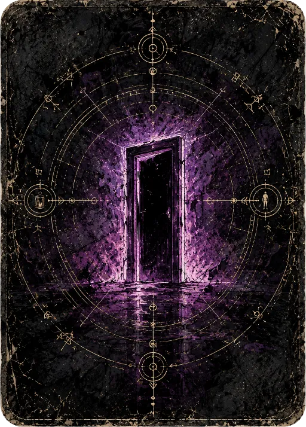

The Look
Mundane reality rendered in ink and ash, broken open by a door of impossible color. The art's one job: make intrusion read as wrong the instant it appears.
The figure on the concept sheet is The Walker: he travels between realities, and where he appears, catastrophe follows. He is weak. He opens the Door — and the Door is the only way through. The look hangs on a single contrast: reality is mundane, intrusion is impossible, and the picture must sell both at once.
The governing rule, lifted straight from the direction sheet: apocalypse is localized. Chaos has a radius. A giant raptor tears through a Monday-morning skyline while, a block away, life continues. That radius — the bleed from grey normalcy into saturated catastrophe — is the visual signature of the whole game.
▤ The canon
Two locked assets. Everything new must look like it belongs beside these.


✦ What the look always is
Tests an asset can pass or fail, not vibes.
Ink-and-ash linework, not clean vector
Heavy crosshatch, grain, and distress carry the base layer. Surfaces look printed and weathered, like a graphic novel left out in the rain. Flat, crisp, modern-flat-design rendering is off-brand.
Reality is desaturated; intrusion is the only true color
The mundane base sits in grey-greens and slate. Saturated color is a scarce resource spent only on intrusion — the Door, the catastrophe, the bleed. If everything is colorful, nothing reads as wrong.
Apocalypse is localized — show the radius
Catastrophe always has an edge. Compose so the boundary between normal and broken is visible in frame: shoppers beside the glow, traffic beneath the volcano. The contrast is the point; a fully-consumed frame loses it.
Occult cartography is the system's hand
Gold geometric line-work — rings, glyphs, sightlines — marks anything structural: card backs, frames, UI chrome. It's the game's diegetic skeleton, the language of the Door and the Destiny, distinct from the painted scene inside.
◑ The reality → intrusion ramp
The single load-bearing element. Treat this ramp as the master gradient every reality maps onto — the shared color logic that makes distinct worlds feel like one game.
It is flavor, never game logic — it never feeds back into rules or the deck. But it is not static: the renderer maps the core's pure intensity read-model onto this ramp, sliding the screen mundane→intrusion as the run escalates. A dial the renderer turns from the game's state, never one the rules read back.
◆ Per-reality palettes
Each world keeps the grey base but claims its own intrusion hue, so realities stay distinct while sharing one logic.
Big-Box Store
Fluorescent dread. Toxic green intrusion glowing down retail aisles.
Monday Morning
Daylight blue normalcy ripped by a raptor; warm ember of falling debris.
Rush Hour
Dusk gridlock under a volcano. Magenta sky bleeding into lava orange.
The Door (constant)
Violet, everywhere. The Door carries the same hue across all realities — it is not of any world.
✕ What the look must never become
Saturated everywhere
If the whole frame is vivid, intrusion stops reading as impossible. Color is rationed on purpose; spend it and the core contrast dies.
Generic dark-fantasy
Skulls, runes-for-their-own-sake, grimdark-by-default. The horror here is the mundane broken, not a fantasy world that was always spooky.
Clean flat-design UI
Crisp vector chrome fights the ink-and-ash world. UI is occult cartography on weathered stock, not a productivity app.
Total-apocalypse splash
Frames consumed edge-to-edge by catastrophe. Without the radius — the surviving normal beside the chaos — the signature contrast is gone.
AI-mush rendering
Smeared, detail-less, "no clear focal point" texture. Linework must be deliberate; the eye must land on the Door.
✓ Settled direction
The three questions the look raised, now decided. These become the visual spec's opening agenda.
Reality → intrusion is flavor, never game logic
Intrusion never feeds back into rules or the deck — it cannot change what is true in the game. But it tracks the run: the renderer drives backdrop intrusion from the core's pure intensity read-model, so the screen slides toward catastrophe as the game escalates. Flavor that follows the state, not a value the state reads back.
Card fronts vary by reality-shard
The back is constant canon; fronts are shard-themed, each carrying its world's palette and intrusion hue. This is the visual half of "worlds are identity, not wallpaper" — the deck in your hand looks like the world you're standing in.
The Walker is always present — distant until drawn
He's a persistent figure in the background, a person in the distance who drifts from scene to scene through the run. He is also in the deck: the moment you draw him, the distance collapses and he's right in front of you. Ambient dread made literal, and a card — which makes "the Walker" a deck mechanic the spec must define, not just art.